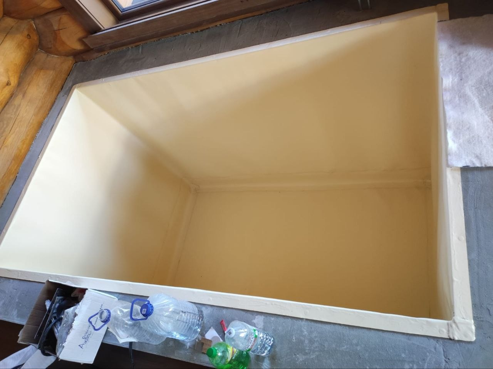

Введение
Плёнка ПВХ для бассейна: устройство покрытия и выбор
ПВХ-плёнка — вариант внутренней отделки чаши, при котором листовой материал формирует видимую поверхность и водоудерживающий слой. Решение подходит не для любой конструкции автоматически: важно проверить совместимость покрытия с основанием, крепёжной системой, формой чаши и условиями монтажа.
Сравнивайте не только цвет или цену рулона. На результат влияют подготовка основания, детали примыканий и закладных, сварные швы, условия эксплуатации и документация конкретного продукта.
ПВХ-покрытие не исправляет конструктивные дефекты чаши и не заменяет проектирование. Сначала определяют, соответствует ли основание выбранной системе.
В этом материале — как устроено такое покрытие, что проверить до заказа и какие ограничения нельзя определить по одной фотографии или названию материала.
Общие вопросы выбора чаши и бюджета разобраны в статьях о сравнении конструкций бассейна и факторах стоимости.

Инженерия
Как устроено покрытие и почему важно основание
Плёнка закрепляется на подготовленной поверхности и соединяется в сплошное покрытие. В зависимости от системы и конструкции чаши монтаж может включать крепёжные профили, подложку и сварку швов. Конкретная последовательность и совместимые комплектующие определяются руководством выбранного производителя.
Основание должно соответствовать требованиям системы: геометрия и ровность влияют на натяжение материала, а выступы или дефекты могут отпечататься на поверхности либо создать локальные нагрузки. Подложка, если она предусмотрена системой, не исправляет крупные неровности и не заменяет подготовку основания.
Уязвимые места — углы, переходы стен и дна, ступени, закладные и другие проходки. Здесь важны раскрой, крепление и качество сварных соединений. Ошибка в примыкании может привести к складке, отслоению или нарушению герметичности; по одному внешнему признаку причину протечки определить нельзя.
В СП 310.1325800.2017 в действующей редакции ПВХ-плёнка перечислена среди допустимых вариантов покрытия железобетонной чаши в области применения этого документа. Это не означает, что любой материал или монтаж автоматически соответствует проекту: необходимо сверить применимость требований и документацию выбранной системы.
Не смешивайте отделочное покрытие с ремонтом чаши или самостоятельной наружной гидроизоляцией. Если проект предусматривает отдельный водоизоляционный слой, узлы основания и покрытия согласуют между собой. Устройство гидроизоляции как отдельная тема рассмотрено в профильной статье.
Смета и бюджет
Как сравнить материал и предложение монтажника
Сравнивайте предложения по одной и той же чаше и одинаковой границе работ. В смете должны быть понятны выбранная линейка и толщина по паспорту продукта, комплектующие, подготовка основания, обработка узлов, монтаж, запуск и условия гарантии. Не делайте вывод о качестве только по цене квадратного метра.
Попросите указать, кто отвечает за геометрию и готовность основания, установку профилей, раскрой и сварку полотен, проходки вокруг закладных и фиксацию результата до заполнения водой. Если часть операций исключена, это должно быть видно до заключения договора.
| Позиция | Что влияет на цену | Где возникают риски |
|---|---|---|
| Строительство бассейна | Геометрия чаши, грунты, доступ техники, качество подготовки основания | Трещины основания, сложность монтажа плёнки, переделки гидроизоляции |
| Оборудование бассейна | Мощность фильтрации, насосы, подогрев и режим работы | Перегрузка системы или недостаточная очистка воды |
| Автоматизация | Дозирование химии, контроль параметров, удалённое управление | Нестабильная химия воды и повышенные затраты на обслуживание |
| Отделка (ПВХ-плёнка) | Качество материала, технология укладки, температурный режим монтажа | Складки, потеря герметичности, сокращение срока службы покрытия |
Проверяйте отдельные позиции, а не только итог: одинаково ли учтены подготовка, материалы, отходы раскроя, узлы, доставка и пусковые работы. Подробный разбор состава предложений приведён в материале о проверке сметы.
-
01
Что входит в систему
Зафиксируйте производителя и серию покрытия, документы продукта, подготовку основания, профили, подложку, монтаж швов и обработку узлов.
-
02
Что определяет объём и стоимость
Учитывайте геометрию чаши, ступени и примыкания, состояние основания, комплектующие и границы работ; точную цену устанавливают по замерам и смете.
-
03
Как принять монтаж
Согласуйте осмотр основания и швов до заполнения, фиксацию замечаний и документы на покрытие и уход.
Технический срок службы нельзя гарантировать одной общей цифрой: он зависит от конкретного продукта, монтажа, химического режима и обслуживания. Если срок заявлен в коммерческом предложении, уточните, к чему именно относится гарантия и какие условия на неё влияют.
До заполнения чаши заранее согласуйте, как будут осматривать готовое покрытие и фиксировать обнаруженные замечания. Проверку выполняют по технологии выбранной системы, а не по универсальному перечню для любой плёнки.
Если при осмотре обнаружены складки, повреждения или подозрение на негерметичный шов, сначала устанавливают причину и согласуют ремонт с монтажной организацией. Косметическая обработка без диагностики не подтверждает герметичность.
В комплекте документов зафиксируйте точное наименование покрытия, применённые комплектующие, рекомендации по очистке и условия гарантии. Для ремонта это позволит определить совместимые материалы и ограничения конкретной серии.
Состояние покрытия оценивают вместе с условиями эксплуатации и журналом обслуживания. Сам факт применения ПВХ-плёнки не гарантирует отсутствие протечек или расходов на ремонт.
Ошибки клиентов
Проверки до заказа и монтажа, которые предупреждают ошибки
Проблемы чаще возникают, когда владелец выбирает только декор и не фиксирует границы работ. До заказа сверьте узлы с проектом, а до закрытия основания — готовность поверхности и расположение элементов, проходящих через покрытие.
-
Проверить комплект. Сопоставить материал, соединительные элементы и аксессуары с проектом и паспортом системы.
-
Принять основание. Зафиксировать состояние и геометрию поверхности до укладки покрытия; порядок подготовки взять из инструкции.
-
Сверить узлы. Проверить положение закладных, ступеней и примыканий до раскроя и сварки.
-
Принять покрытие. Согласовать осмотр швов до заполнения, затем сохранить паспорт материала, инструкции по уходу и гарантийные условия.
Условия заполнения и обслуживания зависят от инструкции конкретного материала и системы обработки воды. Не переносите произвольные значения pH, концентраций или сроков ухода: пользуйтесь требованиями для объекта и руководством производителя.
FAQ
Вопросы о ПВХ-плёнке для бассейна
Короткие ответы ниже помогают понять, что нужно уточнить в проекте и предложении до выбора покрытия.
Можно ли закрыть плёнкой трещину в чаше?
Сама плёнка не исправляет трещины, деформации и неправильную геометрию чаши. Сначала определяют причину дефекта и согласуют ремонт основания с системой покрытия.
Подходит ли ПВХ-плёнка к любому бассейну?
Не всегда. Совместимость зависит от типа чаши, её поверхности, крепёжной схемы и требований конкретного производителя. Это проверяют до заказа.
Все ли виды плёнки одинаковы?
Нет. Отдельные продукты и системы могут отличаться конструкцией, толщиной и назначением. Сравнивайте паспорта конкретных серий и их комплектующие.
Что проверить до монтажа ПВХ-мембраны?
Зафиксируйте спецификацию мембраны, подготовку чаши, совместимость подложки и примыканий, условия монтажа и ограничения изготовителя. СП 310 упоминает мембрану в своей области применения, но это не подтверждает соответствие любого продукта или монтажа.
Как сопоставить предложения по мембранной отделке?
Сравните спецификацию и площадь материала, подготовку основания, сварные швы, узлы, комплектующие, границы работ и условия приёмки. Характеристики конкретной мембраны проверяйте по документации её изготовителя.
CTA
Запросить коммерческое предложение
Подготовим смету, подберем оборудование и предложим реалистичный план строительства бассейна под ключ.